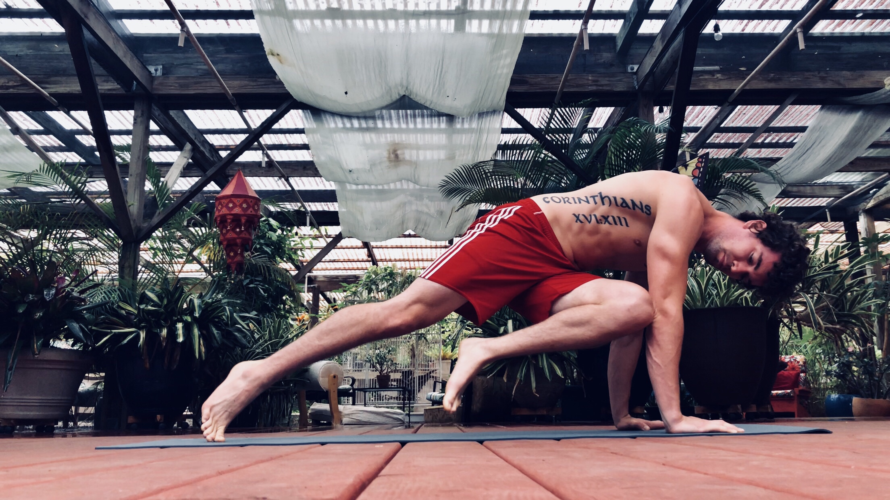

Mindset & Wellness
How to Lose Body Fat

You'd be astounded by how good it feels to be just a few pounds lighter. Imagine being a chubby caterpillar crawling around on the ground not being able to move very fast, poor thing can't even hop off of the Earth's surface, but once you can learn how to shed your outer cocoon and grow your wings you will learn how to fly like a butterfly. Cheesy right? You get the point. As a fitness enthusiast I have to let you know, so I'll keep it short and sweet. It's not about your weight, it's about how you feel.
Maybe you're someone that wants to completely flip your life upside down and become half the human that your mirror is showing you right now. I do mean that literally for some people, and if you are offended as you are actually one of these people.... well, sometimes you just have to accept the truth for what it is.
Parker Palmer, a great author and educator, once said, "Before I can tell my life what I want to do with it, I must listen to my life telling me who I am."On the flip side, maybe you are someone that wants to shed off those last few pounds and tone up before graduation. Either way, not everybody needs to lose weight to feel better. I, for one, would rather lose body fat than weight. My weight is mine, I own it for how I have treated my body up until this moment. The number on the scale means nothing to me if I can train my body to feel good while running up a 10 set of stairs without huffing and puffing. Let's just be real for a moment and accept that what we are attacking is body fat. Forget the scale.
First off, we need body fat to live. To put it more bluntly for you, zero body fat means you shrivel and die. If you live in the cold arctic weather with only 3% body fat, and your nearest Eskimo friend has 40% body fat, you lose. You will get hypothermia and freeze to death long before your friend, the fat Eskimo. Fat is one of the few ways our human bodies store energy for the future, and completely cutting out fat from your diet and starving yourself is a good way to run out of energy early on in life.
It comes down to a few simple changes that you can make on a daily basis. I'll give you a few that you can begin with today, but it's nothing you haven't already heard before so I'll just be here to remind you. They all revolve around the same theme - burning more calories. One strategy is boring but effective: counting your macros (carbs, fats, protein,) to total out your calories for the day, and simply reducing that number by a few hundred calories per day is a sure way to make a difference. It's a matter of calories in vs. calories out - how many calories you consume in your diet each day vs. how many calories you burn by exercising and moving your body throughout the day. That brings me to the second strategy.
The distance a human body travels in a day can make a significant difference in the amount of calories that it burns. A sedentary person travels between 1,000 to 3,000 steps per day. It's normally optimal to travel at least 5 miles a day, or roughly 10,000 steps in order to burn a good amount of calories. Thankfully there is new wearable technology like the Apple Watch and dozens of free apps you can download on your phone to track your daily steps. Not that you need one, but they do help. I understand, maybe you're someone that has a desk job and you're locked up in a cubicle all day. I recommend asking your boss if it's okay to step outside and take a walk around the building once an hour or up and down the office stairs every 30 minutes. I would hope they can understand you are trying to better yourself, but if it's not okay with them then I recommend doing jumping jacks in your cubicle or find a different job. Your body is far more important than letting it sit around all day.
Instead of sitting around, you can always lift weights... heavy weights (a.k.a. - The IRON). I learned at a young age the benefits of lifting things up and putting them down, but I'll save my life story with The IRON for a later post. However, I will let you know that it has served me well. The fact that you can train a muscle to the point where you can make it burn calories for you all day every day is fascinating to me. It's cheating really. All you have to do is tear the muscle fibers apart by weight training... heavy weight training, and then help your body repair itself with good nutrition. Then just trust that your body will do the rest. The work that your body has to go through to repair a worked muscle is enough to burn A LOT of calories throughout the day. It's like a fun game to play, and it's turned out to be the easiest way for me to stay lean for the last 10+ years of my life while eating most of the things I want to eat (all in good conscience and moderation of course).
These are just a few small things you can add to your weekly routine to make a big difference in your life. I can go on for days with all of the different ways to reduce fat, but the world of the internet has already provided that information. You just have to figure out what works best for you, and as long as you feel good about the forward progress you are making that's all that really matters. I don't like to pressure people into thinking they have to lose 100 pounds of fat in two months because in reality it's taken much longer to build up to that point. Take your time with it, and enjoy the process. Just don't be the person complaining about their problems every day without making an effort to change a bad habit into a good one.